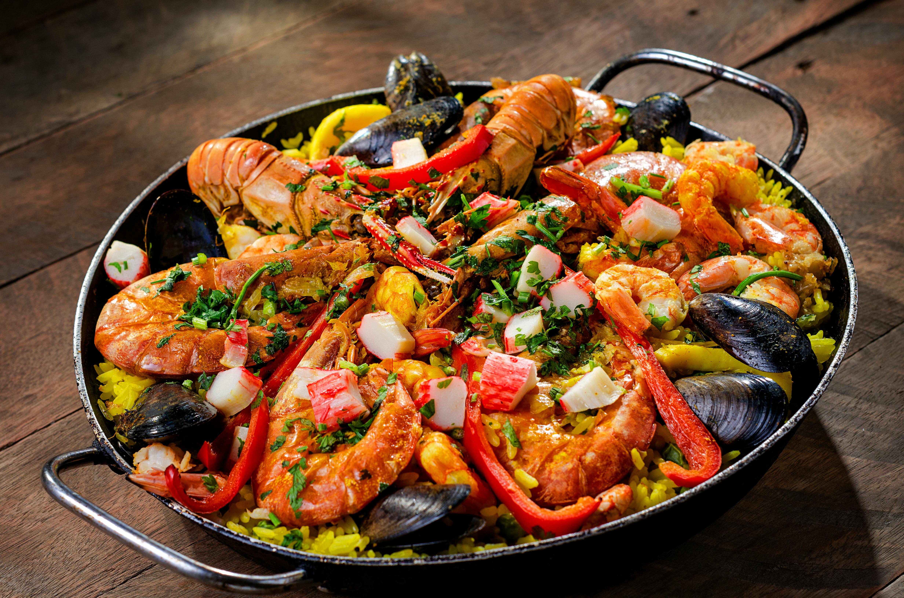

Receta para preparar la mejor Paella 🥘
Home

Descripción
La auténtica Paella con el toque inigualable de los Productos MAGGI® al por mayor te llevará a conquistar los paladares más exigentes y convertir este plato en la estrella de tu menú.
Con ingredientes seleccionados y un proceso meticuloso, esta receta combina tradición y versatilidad, convirtiéndose en el plato estrella para restaurantes y eventos especiales.
Perfecta para destacar en tu menú y deleitar a tus comensales con sabores intensos y colores vibrantes. ¡Ponla a prueba y deleita a todos con el delicioso sabor, aroma y consistencia de MAGGI®!
Recuerda ajustar las cantidades de los ingredientes para satisfacer altas demandas.
Ingredientes
- 4 Ostiones.
- 4 Almejas.
- 4 machas.
- 200 Gr. De camarones ecuatorianos.
- 300 Gr de pollo cortado en Juliana.
- 8 Unidades de choricillos cortados en slice.
- 100 Gr de Arvejas.
- 200 Gr de Arroz.
- 1 Gr de Azafrán.
- 22 gr Caldo de Gallina MAGGI®.
- 1litro de agua caliente.
- 150 cc de vino blanco.
- 1 diente de ajo picado fino.
- 40 cc de aceite de oliva.
- Sal y pimienta.
Preparación
- En un jarro medidor, incorporar 1 litro de agua caliente con el Caldo de Gallina MAGGI®. Luego, llevar a reservar.
- En una olla paellera incorporar el aceite de oliva y poner a fuego medio. Luego colocar el azafrán para tostarlo.
- En la paellera, incorporar el arroz con el ajo picado fino y sofreír por unos minutos. Agregar poco a poco el vino blanco y el fondo de pescado hasta lograr un color amarillo anaranjado en los granos del arroz.
- Luego, agregar el pollo, el choricillo y las arvejas, debido a que estos necesitan mayor tiempo de cocción que los mariscos.
- Cuando el grano del arroz este casi en su punto, agregar intercaladamente los mariscos en la superficie de la paellera.
- Dejar reposar unos 5 minutos y servir la deliciosa Paella elaborada con Productos MAGGI®.